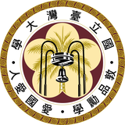
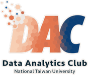
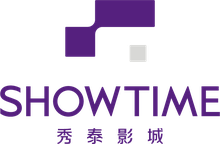

Jhih Ru (Joanne) Lin
Seeking full-time analytical roles in Strategy, Marketing, Growth, and Go-to-Market.
Download CVAbout
I’m a data-driven business professional passionate about turning market and customer insights into strategies that drive business growth. I’m currently seeking full-time opportunities in Business Strategy, Go-to-Market, and Product/Program Management, where I can combine analytical thinking with cross-functional execution.
Through my experience in consumer goods, fintech, and financial services, I’ve worked on product launches, market strategy, business development, and data-driven projects. These experiences have strengthened my ability to translate insights into actionable decisions and collaborate across teams to move ideas from strategy to execution.
Currently pursuing my MSTM at UIUC, I’m excited to continue building at the intersection of data, strategy, and execution.
Education
Expected Aug 2027

Jun 2026
- Received 5 Academic Excellence Awards (Top 5% of class)
Jun 2024
Internship Experience
Unilever, Go-To-Market Intern
- Led product launches and rebranding across Taiwan and China, contributing to up to 6.8 pp YoY value share growth.
- Improved workflow visibility by 40% through VBA dashboards.
- Supported marketing strategies with consumer insights.
JKOpay, Business Development Summer Intern
- Identified growth opportunities through market research and competitive analysis, achieving a 20% merchant partnership conversion rate and 15% nonprofit partnership conversion rate.
Shanghai Commercial and Savings Bank, Project Assistant
- Optimized chatbot operations by restructuring 400+ customer inquiries, reducing live-agent workload by 30%.
- Conducted competitive analysis to identify customer experience improvement opportunities.
Leadership

NTU Data Analytics Club, Marketing & PR Director
- Led a six-member marketing team to execute social media strategies, increasing engagement by 59% on Facebook and 100% on Instagram.
- Built corporate partnerships to strengthen industry connections.
Projects

ShowTimes Cinemas Consumer Behavior Analytics, Team Member
- Analyzed 300K+ transactions using Python, Poisson regression, and K-means clustering to uncover customer behavior insights.
- Developed data-driven strategies projected to increase premium-theater upgrade conversions by 20%.
L’Oréal Brandstorm 2023, Team Leader
- Led a team to develop an NFT-powered Metaverse retail concept.
- Conducted market research and feasibility analysis to deliver a Top 7 national finalist project.